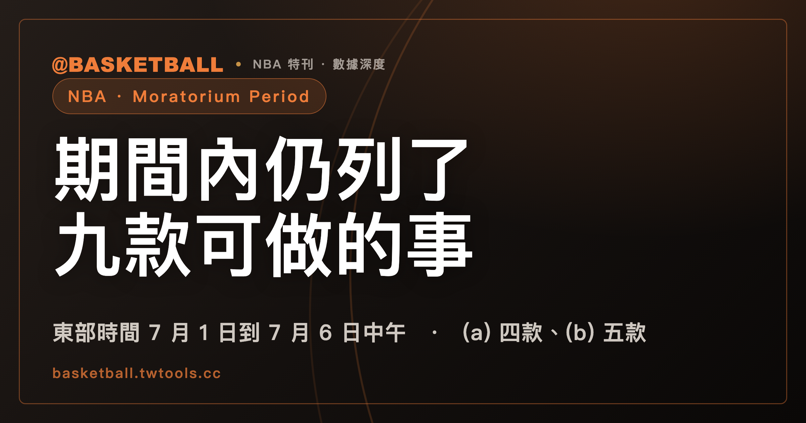

Moratorium Period：東部時間 7 月 1 日到 7 月 6 日中午，2023 NBA CBA 仍列了九款可做的事
依 2023 NBA CBA Article I(mm)，Moratorium Period 自某個 Salary Cap Year 的 7 月 1 日東部時間 12:01 a.m. 起，到次一個 7 月 6 日東部時間 12:00 p.m. 止。Article II Section 15 的主句禁止球員與球隊在期間內就聘僱條款訂立口頭或書面協議，除非 Section 15 其餘部分允許；(a) 款列四件期間內可做的事，(b) 款另列五件自第一天東部時間 12:01 p.m. 起可做的事。

新手村｜CBA 入門・Moratorium Period
本文依據 2023 NBA CBA（官方 PDF；本機保存的全文文字檔取得日 2026 年 10 月 4 日；版本範圍見文末）的 Article I(mm)、Article II Section 15，以及接到 Section 15 的 Article X、Article XI 幾個款次。文中的 7 月 1 日、7 月 6 日是條文的通則寫法，不指任何一年的日曆；Moratorium Period、Offer Sheet、Player Contract 這類大寫定義詞保留 CBA 的英文，不另譯。
讀完之後，你應該能說出這段期間從哪一刻開始、到哪一刻結束，看出 Section 15 主句與 (a)(b) 兩款各管什麼，也能拿一個時間點加一件事，自己判斷它落在哪一款。
Moratorium Period 從 7 月 1 日東部時間 12:01 a.m. 開始，到次一個 7 月 6 日東部時間 12:00 p.m. 結束
2023 NBA CBA Article I(mm) 的定義是：就某個 Salary Cap Year 而言，Moratorium Period 是從這個 Salary Cap Year 的 7 月 1 日東部時間 12:01 a.m. 起，到次一個 7 月 6 日東部時間 12:00 p.m. 止。條文括號補了一句 for clarity：不論 7 月 6 日是不是 business day，都照這個終點算。Salary Cap Year 本身，Article I(nnn) 的定義是 7 月 1 日到次一個 6 月 30 日。
條文裡還有第三個時間點。Article II Section 15(a)(ii) 與 Section 15(b) 的導語，都寫到「期間第一天的東部時間 12:01 p.m.」。三個時間點並列如下：
| 時間點（均為東部時間） | 寫在哪一條 | 條文賦予它的角色 |
|---|---|---|
| 7 月 1 日 12:01 a.m. | Article I(mm) | Moratorium Period 的起點 |
| 次一個 7 月 6 日 12:00 p.m. | Article I(mm) | Moratorium Period 的終點 |
| 期間第一天 12:01 p.m. | Article II Section 15(a)(ii)、Section 15(b) 導語 | Offer Sheet 可以簽訂的起點；Section 15(b) 五款事項的起點 |
這三個時間點各自出現在自己的條文裡，Article I(mm) 與 Section 15 的這幾處沒有寫它們如何銜接。
Section 15(a) 四款在期間內可做，(b) 五款自期間第一天東部時間 12:01 p.m. 起可做
Article II Section 15(a) 共有 (i) 到 (iv) 四款，(a)(iv) 之後接的是 (b)。(b) 的導語是 “Beginning at 12:01 p.m. eastern time on the first day of the Moratorium Period”，後面接 (i) 到 (v) 五款。九款合起來如下：
| 款次 | 期間內可做的事（2023 NBA CBA） | 起算時點（東部時間） |
|---|---|---|
| (a)(i) | 球員與球隊就「期間結束後才可簽」的 Player Contract 或 Extension 的條款談判 | 期間內 |
| (a)(ii) | 球員與球隊談判一份 Offer Sheet，這份 Offer Sheet 可自期間第一天東部時間 12:01 p.m. 起簽訂（Offer Sheet 的定義在 Article XI Section 5(b)） | 期間內 |
| (a)(iii) | 球員接受尚未失效（outstanding）的 Required Tender、Qualifying Offer 或 “Maximum Qualifying Offer”（定義在 Article XI Section 4(a)(ii)） | 期間內 |
| (a)(iv) | 球隊依 Article II Section 11(f)，行使 Two-Way Contract 的 Standard NBA Contract Conversion Option | 期間內 |
| (b)(i) | 球員與球隊簽訂 Offer Sheet | 期間第一天 12:01 p.m. |
| (b)(ii) | First Round Pick 與持有其選秀權的球隊簽訂 Rookie Scale Contract | 期間第一天 12:01 p.m. |
| (b)(iii) | Second Round Pick 與持有其選秀權的球隊，簽訂依 Second Round Pick Exception 簽出的 Player Contract | 期間第一天 12:01 p.m. |
| (b)(iv) | 球員與球隊簽訂 Player Contract，限制有三項：長度不超過 2 個 Seasons；每個 Salary Cap Year 的 Salary 等於適用於該球員的 Two-Way Player Salary 或 Minimum Player Salary；不含任何種類的 bonus | 期間第一天 12:01 p.m. |
| (b)(v) | 球隊依 Article II Section 11(h)，就帶有 Exhibit 10 的 Contract 行使 Two-Way Player Conversion Option | 期間第一天 12:01 p.m. |
(a) 款四件裡，只有 (i)(ii) 是談判，而且兩件都寫明了談判的對象。(iii)(iv) 不是談判：一件是球員接受已經在手上的報價，一件是球隊行使合約裡早就寫好的選擇權。
(b)(iv) 的三項限制要同時成立：年限、薪資水準、有沒有 bonus。任何一項不符，這份合約就不在 (b)(iv) 的範圍內。
(b)(i) 簽的 Offer Sheet，就是 (a)(ii) 可以先談判的那一類文件。兩處的 12:01 p.m. 指的都是期間第一天。
Moratorium Period 內，Section 15 主句禁止的是哪一件事？
2023 NBA CBA Article II Section 15 的主句有兩個前提。第一個前提是「除 Section 15 其餘部分允許者外」，第二個前提是「不論本協議其他條款」（原文 notwithstanding）。在這兩個前提之下，原文寫的是 “no player and Team may enter into any oral or written agreement concerning terms and conditions of the player’s employment … during the Moratorium Period.”
主句後半還有一個禁止：球員與球隊在期間內，也不得把這類協議以 Uniform Player Contract 或其修訂的形式寫成書面。被禁止的對象因此有兩個，一個是就聘僱條款與條件「訂立」口頭或書面協議，一個是把協議寫成 Uniform Player Contract 或修訂。
主句的動詞 enter into 在 CBA 裡沒有獨立定義；(a)(i)(ii) 用的是另一個字 negotiate，Article I(nn) 把它定義為球員（或其代表）與球隊（或其代表）之間，任何與該球員以籃球員身分受僱、或僱用條件有關的書面或口頭溝通，不論誰發起。
主句允許的例外，就是 Section 15 其餘部分的 (a) 與 (b) 兩款。
兩個 Conversion Option 的名字都帶 Two-Way，轉換的方向卻相反
Section 15(a)(iv) 與 Section 15(b)(v) 各引了一個 Conversion Option，名字都跟 Two-Way 有關，轉換的方向不同：
- Section 15(a)(iv) 引用的 Article II Section 11(f)：每份 Two-Way Contract 都給球隊一個選擇權，可以在合約期間，把這份 Two-Way Contract 轉成不是 Two-Way Contract 的合約，CBA 稱它為 “Standard NBA Contract”。
- Section 15(b)(v) 引用的 Article II Section 11(h)(i)：每份帶 Exhibit 10 的 Contract 都給球隊一個選擇權（寫在 Exhibit 10 裡），可以把這份合約轉成提供 Two-Way Player Salary 的 Two-Way Contract，CBA 稱它為 “Two-Way Player Conversion Option”。
前者從 Two-Way Contract 出發，後者從帶 Exhibit 10 的 Contract 出發。兩條各自在後段還有附帶限制。轉成 Standard NBA Contract 這一邊，本站的雙向合約入門，有專門一節寫球隊的選擇權、行使時間與轉換之後合約的狀態。
期間內談妥的合約，球員和球隊可以公開宣稱嗎？
這件事寫在 2023 NBA CBA Article XI（Free Agency）Section 1(c)，不在 Section 15。條文寫的是：Moratorium Period 結束之前，球員（含任何有權代表球員行事的人或實體，原文 acting with authority on behalf of a player）與球隊，各自被禁止公開宣稱雙方已就一份 Player Contract（或其修訂）的條款達成協議。
禁止的對象，限於「依 Article II Section 15，要等到該 Moratorium Period 結束之後才可簽」的那類 Player Contract。條文還附了一個歷史例外：這項禁止對球員不適用於 2023-24 Salary Cap Year 的 Moratorium Period。原文的例外只寫了 players，球隊那一側沒有這個例外。
Article XI 與 Article X 把 UFA、RFA、Draft Rookie 的時間點接到 Section 15
Article XI Section 1(a)(i)(ii) 與 Article X Section 4(h) 各自寫明受 Article II Section 15 約束，並分別為三種身分寫下時間點：
| 身分 | 條文 | 可以談判 | 可以簽約 |
|---|---|---|---|
| Unrestricted Free Agent（含將於緊接的 7 月 1 日成為 UFA 者） | Article XI Section 1(a)(i) | 自 6 月 30 日東部時間 6:00 p.m. 起 | 適用的 Moratorium Period 結束後，可簽 Player Contract |
| 將成為 Restricted Free Agent 者 | Article XI Section 1(a)(ii) | — | 自期間第一天東部時間 12:01 p.m. 起，可與 Prior Team 以外的球隊簽 Offer Sheet；期間結束後，可與 Prior Team 簽 Player Contract |
| Draft Rookie | Article X Section 4(h) | 自 NBA Draft 結束後 | Moratorium Period 結束後，可簽 Player Contract |
Draft Rookie 這一列和 Section 15(b)(ii) 各寫各的：Article X Section 4(h) 寫期間結束後可簽 Player Contract；Section 15(b)(ii) 寫 First Round Pick 與持有其選秀權的球隊，自第一天東部時間 12:01 p.m. 起可簽 Rookie Scale Contract。兩條都是 CBA 原文，本文照原樣並列。
RFA 那一列的 Offer Sheet 簽出之後，還有一個與期間相連的期限。Article XI Section 5(i) 寫：在 Moratorium Period 期間，ROFR Team 收到的 Offer Sheet，ROFR Team 送出 First Refusal Exercise Notice 的期限，是緊接該期間之後的 7 月 7 日東部時間 11:59 p.m.。本站受限制自由球員入門，其報價單期限表的第三列就是這一條。
Section 15 全段與 Moratorium 一詞的 25 處前後，都查不到 trade 一詞
本文查的範圍是本站保存的 2023 NBA CBA 全文文字檔：Section 15 全段沒有出現 trade 或 assign，Moratorium 一詞在全文出現 25 處，每一處前後各 3 行也沒有出現 trade。在這個範圍內，CBA 沒有把交易寫進 Moratorium Period 的限制，也沒有寫成不受限制。本文對交易不下結論；要確認，需要另外查 CBA 的交易條款或聯盟的官方說明。
八個假設情境，逐一判斷落在主句、(a) 款還是 (b) 款
以下是練習用的假設。每一題都假設那一年的 Moratorium Period 依 Article I(mm) 計算；球隊用甲隊、乙隊代稱，球員用「某球員」代稱；時間均為東部時間。
| 情境（假設） | 判斷 | 對應條文 |
|---|---|---|
| A. 7 月 1 日上午 11:00，乙隊與某球員（將成為 RFA，Prior Team 是甲隊）簽下 Offer Sheet | Section 15 主句禁止；(b)(i) 要到第一天 12:01 p.m. 才開始 | Section 15 主句、(b) 導語 |
| B. 同一天上午 11:00，乙隊與同一位球員談判那份 Offer Sheet 的條款 | 允許談判；Offer Sheet 要自第一天 12:01 p.m. 起才可簽 | Section 15(a)(ii) |
| C. 同一天中午 12:30，乙隊與同一位球員簽下 Offer Sheet（假設乙隊符合 Offer Sheet 的其他條件） | 允許 | Section 15(b)(i) |
| D. 7 月 3 日上午 10:00，甲隊與某位 UFA 簽 3 年、薪資高於 Minimum Player Salary 的 Player Contract | 不屬於 (a)(b) 任何一款：不是 Offer Sheet、不是選秀權合約、超過 2 個 Seasons、薪資不是 Minimum Player Salary；落在主句的禁止 | Section 15 主句；(b)(iv) 的三項限制 |
| E. 7 月 3 日上午 10:00，甲隊與同一位 UFA 簽 1 年、Salary 等於適用於他的 Minimum Player Salary、不含任何 bonus 的 Player Contract | 允許；若合約加了 bonus，就超出 (b)(iv) | Section 15(b)(iv) |
| F. 7 月 3 日下午 2:00，甲隊與球員的代理人對外宣稱，雙方已談妥情境 D 的 3 年合約（假設該年不是 2023-24 Salary Cap Year） | 雙方各自被禁止公開宣稱 | Article XI Section 1(c) |
| G. 7 月 3 日上午 10:00，甲隊對一份 Two-Way Contract 行使 Standard NBA Contract Conversion Option | 允許 | Section 15(a)(iv)、Section 11(f) |
| H. 7 月 6 日中午 12:30，甲隊與那位 UFA 簽情境 D 的 3 年合約 | 不在期間內：期間已在當天東部時間 12:00 p.m. 結束，Section 15 主句寫的是 during the Moratorium Period；Article XI Section 1(a)(i) 寫 UFA 在適用的 Moratorium Period 結束後可簽 Player Contract | Article I(mm)；Article XI Section 1(a)(i) |
這張表的判斷順序可以拆成三步：先看時間點落在第一天 12:01 p.m. 之前、期間之內，還是 7 月 6 日 12:00 p.m. 之後；再看這件事是不是聘僱條款的口頭或書面協議；接著到九款裡找有沒有對得上的款次。D 與 E 的差別在 (b)(iv) 的三項限制，A 與 C 的差別在 12:01 p.m. 這個時間點。
找得到款次，就依那一款的條件做；找不到，就落回主句的禁止。這是本文對條文結構的讀法，不是條文原句，依據是主句的「除 Section 15 其餘部分允許者外」。
範圍與版本：本文只依據 2023 NBA CBA
本文的規則句都出自 2023 NBA CBA 單一文件，只核對 2023 年版，未核對後續修訂。CBA 會隨新協議修訂，之後以官方最新版為準。NBA 2025-26 規則書、FIBA 2026 版規則書（2026 年 10 月 1 日生效）、NBA 詞彙表 2026 年 9 月 25 日快照，本站保存的全文文字檔中都沒有出現 Moratorium 一詞，這三份文件不在本文的依據裡，FIBA 也不適用於這個題目。
Section 15 是 2023 NBA CBA 當前條文；Article XI Section 1(c) 的 2023-24 Salary Cap Year 例外，是條文寫死的歷史例外。CBA 在 Moratorium 一詞的其他命中處（例如 Rookie Scale Extension 的窗口起點、Projected BRI 的協議期限）屬於另一套機制，本文沒有展開。
常見問題
Moratorium Period 到什麼時候結束？
依 2023 NBA CBA Article I(mm)，就某個 Salary Cap Year 而言，Moratorium Period 在次一個 7 月 6 日東部時間 12:00 p.m. 結束，不論 7 月 6 日是不是 business day；起點是該 Salary Cap Year 的 7 月 1 日東部時間 12:01 a.m.。見文章開頭的時間點表。
Moratorium Period 內，球員和球隊可以談判嗎？
依 2023 NBA CBA Article II Section 15(a)(i)(ii)，Moratorium Period 內可以談判的對象有兩類：期間結束後才可簽的 Player Contract 或 Extension，以及可自期間第一天東部時間 12:01 p.m. 起簽訂的 Offer Sheet。見九款總表。
Offer Sheet 要等到期間結束才能簽嗎？
不用。依 2023 NBA CBA Article II Section 15(b)(i) 與 Article XI Section 1(a)(ii)，將成為 RFA 的球員，自 Moratorium Period 第一天東部時間 12:01 p.m. 起，可以與 Prior Team 以外的球隊簽 Offer Sheet；期間結束後，則可與 Prior Team 簽 Player Contract。見 Article XI 那一節的表。
Moratorium Period 內可以交易嗎？
本站保存的 2023 NBA CBA 全文文字檔裡，Section 15 全段與 Moratorium 一詞 25 處的前後各 3 行，都沒有出現 trade。本文對 Moratorium Period 內的交易不下結論，見交易那一節。
資料來源
- 2023 NBA Collective Bargaining Agreement（官方 PDF；本機保存的全文文字檔取得日 2026 年 10 月 4 日，僅核對 2023 年版，未核對後續修訂）：2023 NBA CBA（官方 PDF）。用到 Article I(mm)(nn)(nnn)、Article II Section 11(f)(h)(i)、Section 15、Article X Section 4(h)、Article XI Section 1(a)(c)、Section 5(i)。
- NBA 2025-26 規則書、FIBA 2026 版規則書（2026 年 10 月 1 日生效）：本機保存的全文文字檔，取得日 2026 年 10 月 4 日，無可點擊網址。
- NBA 詞彙表（2026 年 9 月 25 日快照）：本機保存的全文文字檔，無可點擊網址。